Viscid
Surf Co.
Concept to launch — brand strategy, identity, packaging, e-commerce, and apparel for a hand-poured organic surf wax company.

Concept to launch — brand strategy, identity, packaging, e-commerce, and apparel for a hand-poured organic surf wax company.
Viscid Surf is one of those projects that doesn't come along very often — the kind where you're not just designing for a client, you're building a brand from the ground up with complete creative ownership. Viscid Surf Co. is a hand-poured, organic surf wax company based in Charleston, South Carolina, founded on the belief that there's real value in something made by hand, with love, from locally sourced ingredients.
I took this project from a blank canvas to a fully realized, commercially live brand. That meant everything: brand strategy, naming the product lines, writing the brand voice, designing the logo, building the e-commerce website, designing the packaging, and creating the full suite of apparel and promotional materials. When viscidsurf.com went live, it wasn't just a website — it was a complete brand world.
"Apply. Surf. Repeat."
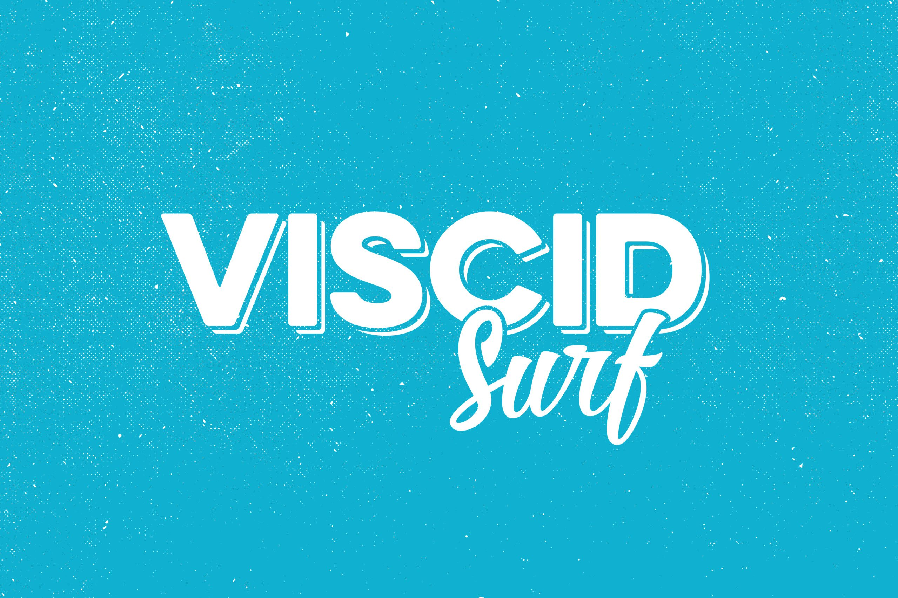
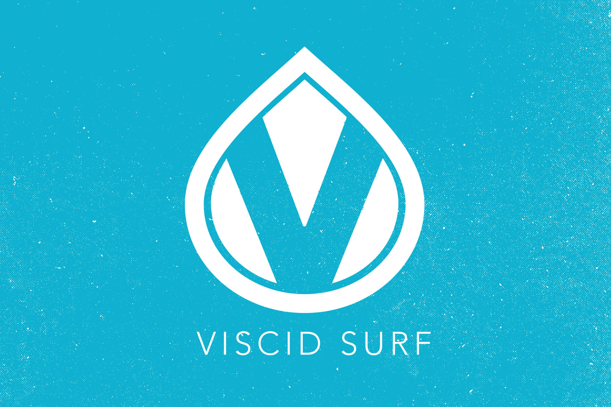
The foundation of Viscid Surf is a genuinely differentiated product: a surf wax made with beeswax sourced from Johns Island, SC — non-toxic, biodegradable, and free of the petroleum-based chemicals that make up most of the wax market. It was developed and used by real East Coast surfers who wanted a cleaner alternative that didn't compromise on performance.
The challenge was translating that authentic, handcrafted origin story into a brand that could stand on a surf shop shelf, live on someone's social feed, and hold its own against established wax brands that have been around for decades. The brand needed to feel legit — not like a homemade project, but like a company that belonged in the lineup.
Beyond the brand itself, the client needed a functioning e-commerce platform that could sell multiple product SKUs across different water temperatures, support a merchandise line, and build a community around the brand through a surf team sign-up and email list. This was a full-stack creative and digital build.
Before any design work began, I focused on who Viscid Surf was for and how they should talk. This isn't a corporate outdoor brand — it's a passion project born in the water. The brand voice had to reflect that: authentic, coastal, a little poetic, deeply connected to surf culture without being exclusive or intimidating.
I developed the brand positioning around the idea that surfing is a feeling — an escape, a ritual, a relationship with the ocean that goes beyond sport. The single differentiating brand idea became: 'Using earth-friendly, locally sourced beeswax, Viscid Surf Co. hand creates super-sticky surf wax for lasting grip and traction.'
From that, the tagline wrote itself: Apply. Surf. Repeat. Three words. A complete ritual. Something you could put on a sticker, a shirt, or a homepage header and it would do exactly what it needed to do.
The brand copy leans into that same ethos — 'For the drifters, the dreamers. For earth lovers, summer seekers. For those who crave the salt and the spray and the soul-cleanse that only the ocean can offer…' It's not product copy. It's an invitation.
The logo needed to walk a very specific line: it had to feel handcrafted and authentic to surf culture while also being clean and versatile enough to work on packaging, apparel, and digital surfaces. I developed a wordmark-led identity with a custom logotype that has the right amount of personality without leaning into any surf clichés — no waves, no palm trees, no cartoon surfers.
The logo system I built includes multiple lockup variations so it could flex across every application — full horizontal, stacked, and standalone mark. That kind of system-thinking is what separates a logo from a brand identity. When the mark ended up on a snap-back hat, a wax wrapper, and a van wrap, they all had to feel like they came from the same place. They do.
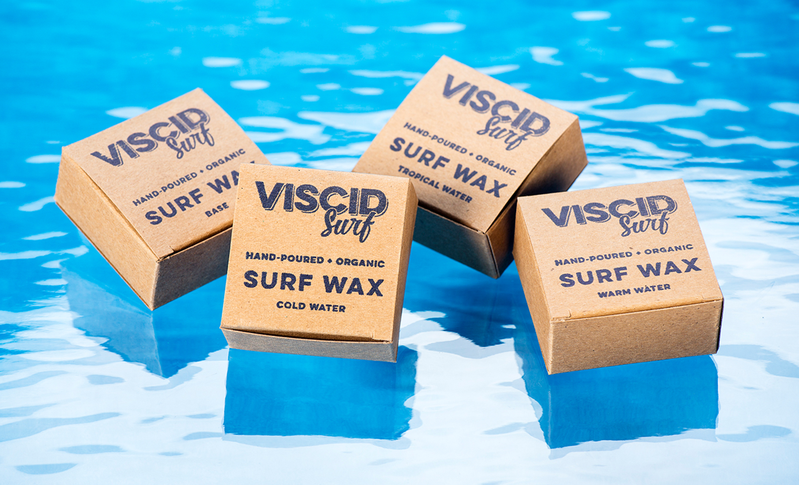
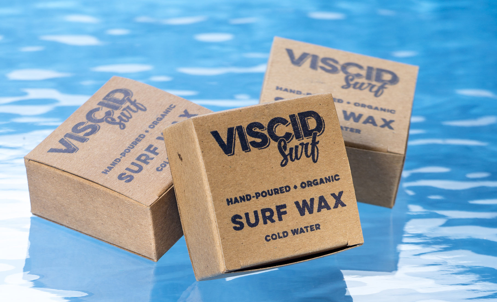
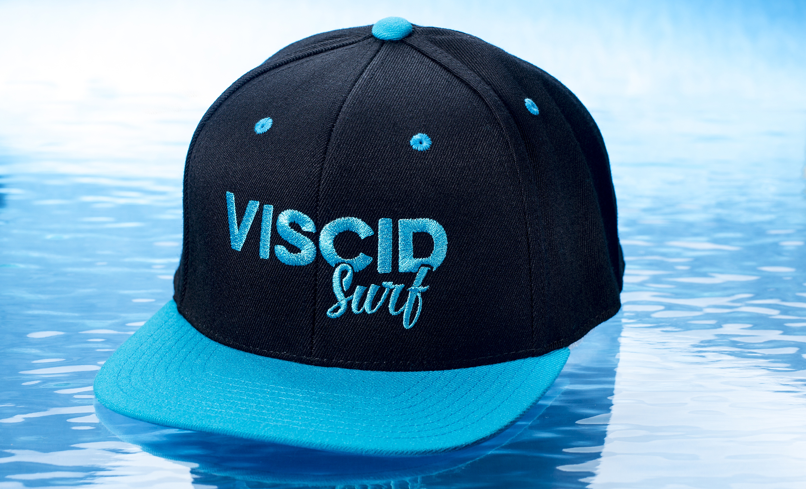
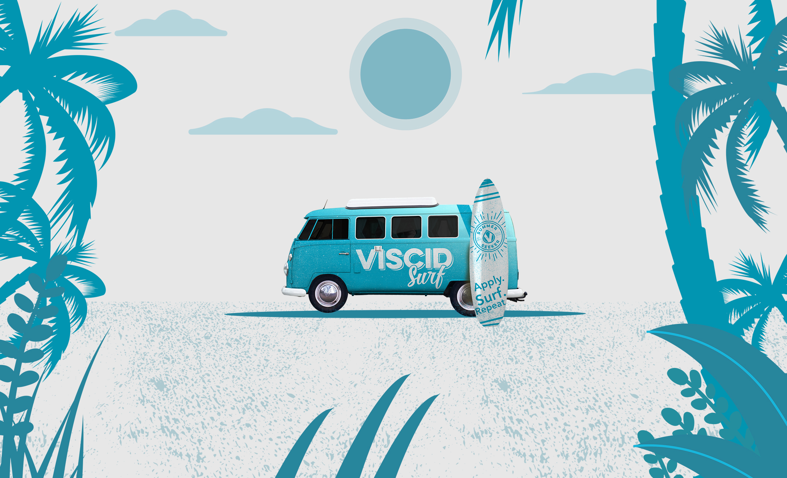
The packaging was one of the most satisfying design problems on this project. Surf wax is a small, tactile product — the label has to work at a very small scale, communicate key information quickly, and look good in the hand of someone who's about to paddle out.
I designed labels for four product lines (Base, Warm Water, Cold Water, and Tropical), each with enough visual distinction to navigate the shelf while staying unmistakably Viscid. I also made sure the eco credentials — organic, non-toxic, biodegradable, locally sourced beeswax from Johns Island, SC — were visible on every package. For this brand, those aren't fine print. They're the whole point.
The website had to do a lot of things well simultaneously: sell product, tell the brand story, sign up surf team members, and capture an email list — all while feeling like it belonged in the world of the brand rather than a generic WooCommerce template.
I designed and built the full site at viscidsurf.com with a mobile-first approach, because the overwhelming majority of this audience is going to land on that page from a phone. The shop carries multiple SKUs across wax temperature varieties and apparel — t-shirts in multiple colorways, snapback and flat-bill hats, and mix-and-match wax packs.
The checkout experience is clean, the product photography is strong, and the homepage communicates the brand ethos before it ever asks you to buy anything. I also built in free shipping across all U.S. orders as a conversion lever and created a wholesale inquiry path for surf shops looking to carry the product — smart for a brand at this stage, where retail placement is a key growth driver.
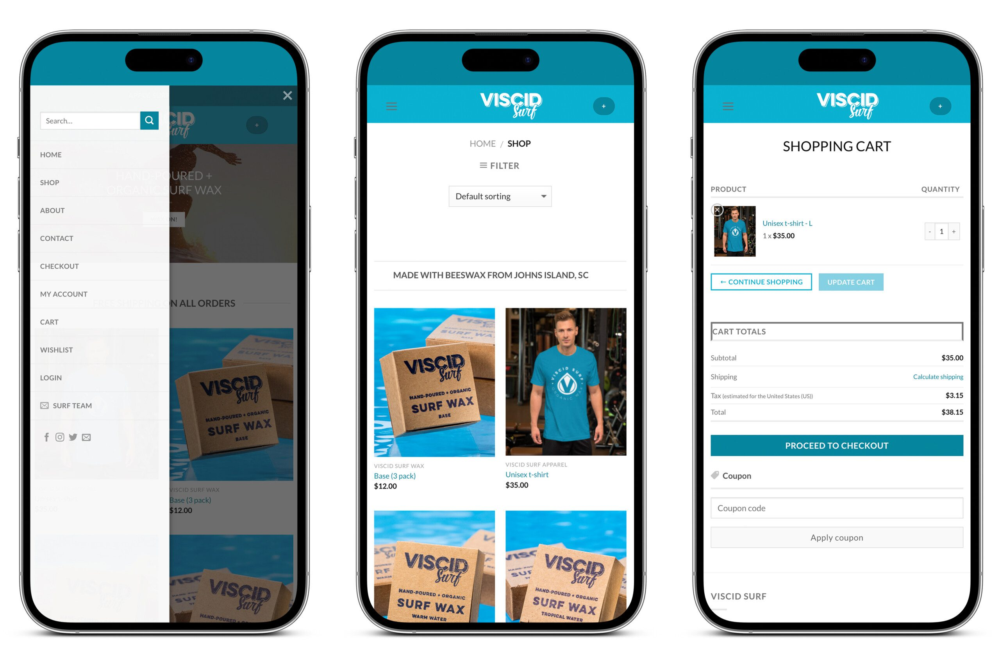
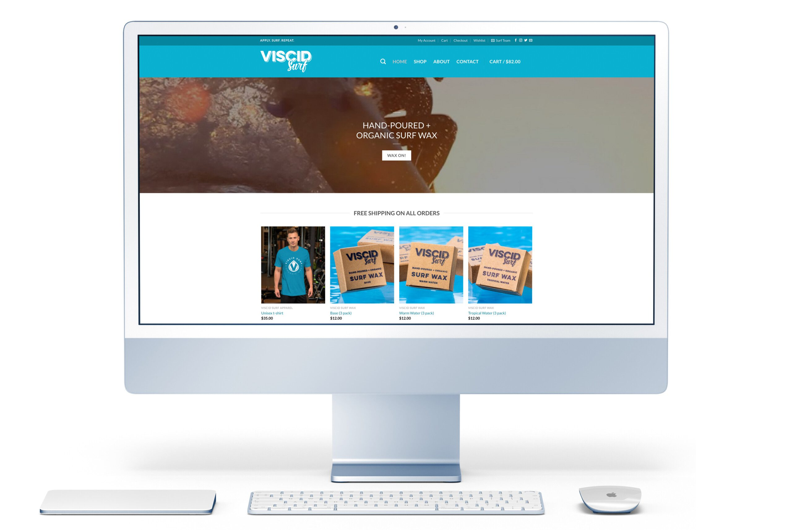
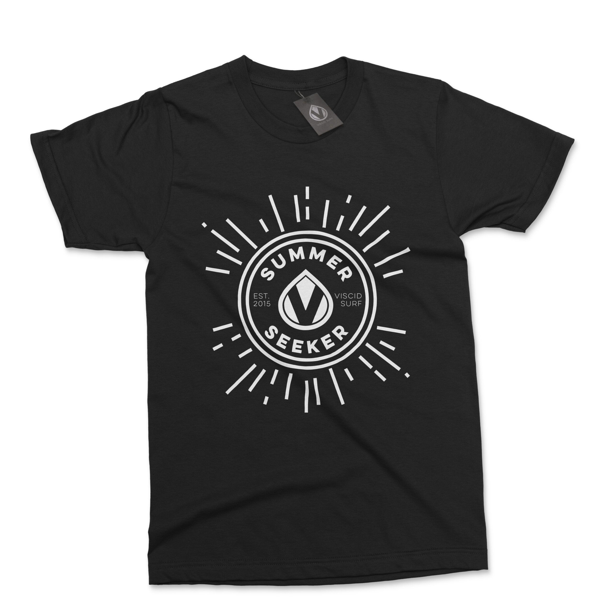
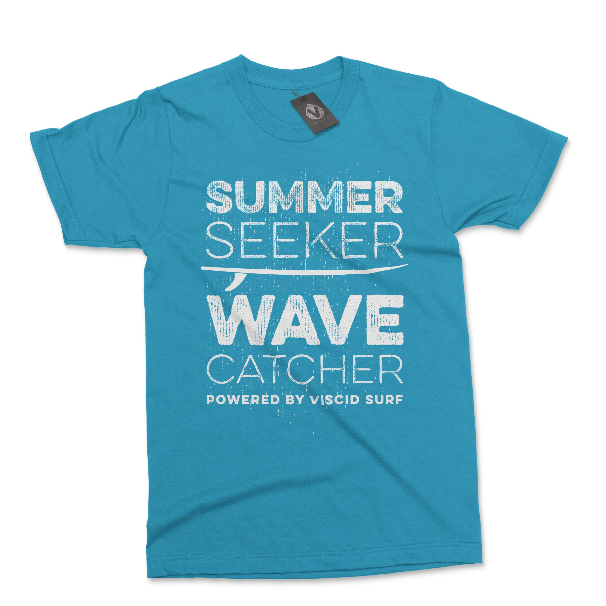
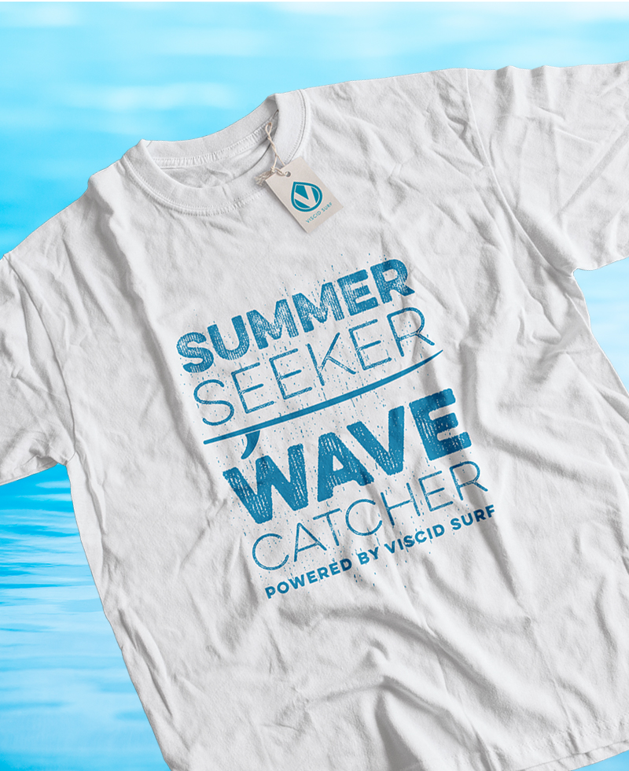
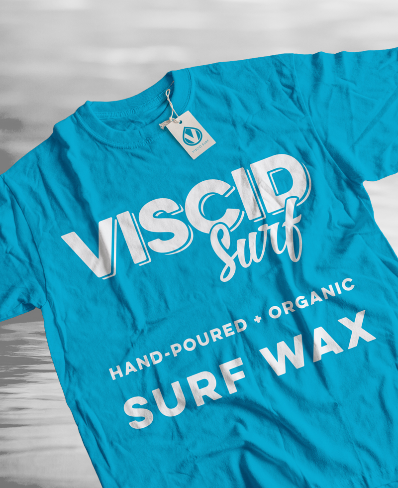
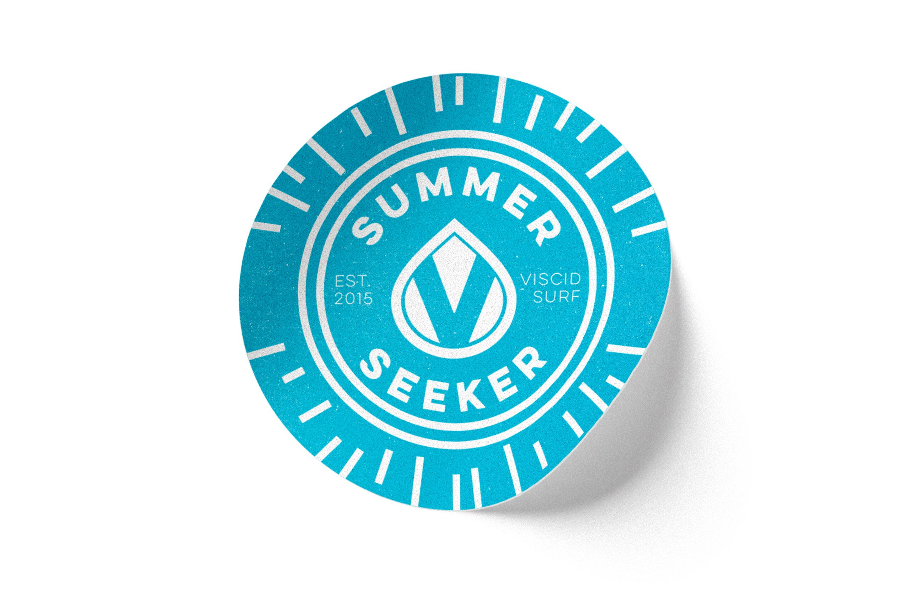
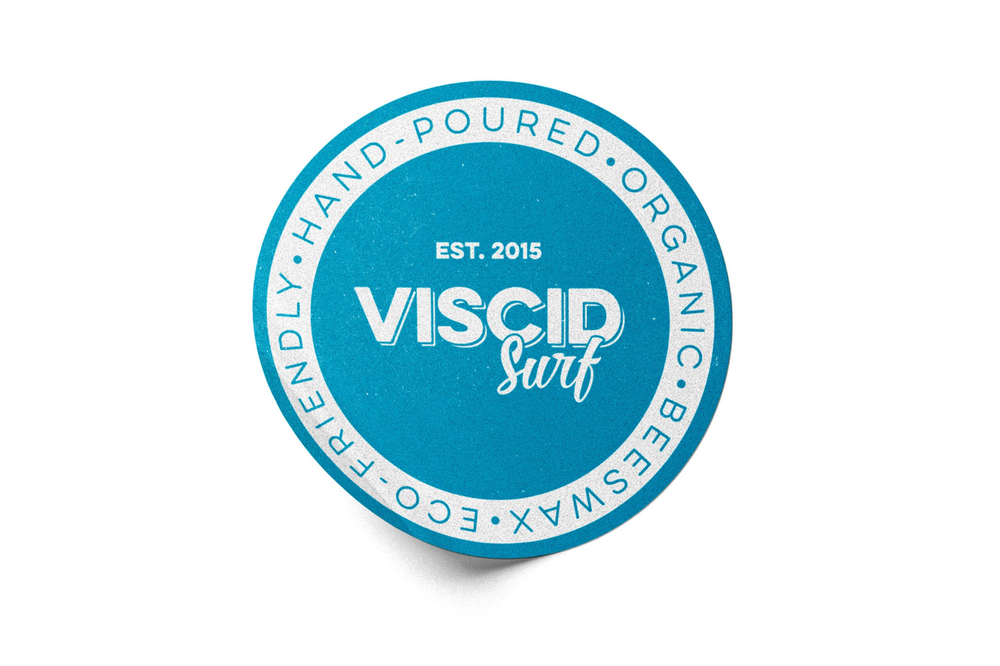
The merch line was an important part of the brand strategy, not just a revenue stream. In surf culture, a well-designed t-shirt or hat is a walking billboard — and it signals whether a brand has cultural credibility or not. I designed a range of apparel that people would actually want to wear: clean graphic tees, logo shirts, Summer Seeker designs, and a hat lineup with multiple colors.
The van wrap and sticker designs extended the brand into physical space. Stickers especially matter in surf culture — they end up on boards, helmets, and bumpers. Viscid's sticker designs had to be bold enough to earn that real estate, and cohesive enough to reinforce the brand every time someone spotted one.
What makes this project particularly meaningful in my portfolio is that it's not a spec project or a rebrand — it's a real brand, with a real website, real products, and a real community. Viscid Surf went live and became an established player in the East Coast organic surf wax market, distributed through its own e-commerce channel and available through local retailers like Bert's Market on Folly Beach, SC.
The brand shipped wax to surfers on both coasts, and established a surf team program that grew the community around the product. The site still runs today, the brand identity is intact, and the voice I built for it has stayed consistent across every touchpoint.
Good branding doesn't just look right at launch — it holds up over time, stays flexible enough to grow with the brand, and creates the kind of identity that a community adopts as their own. Viscid Surf has done all three.